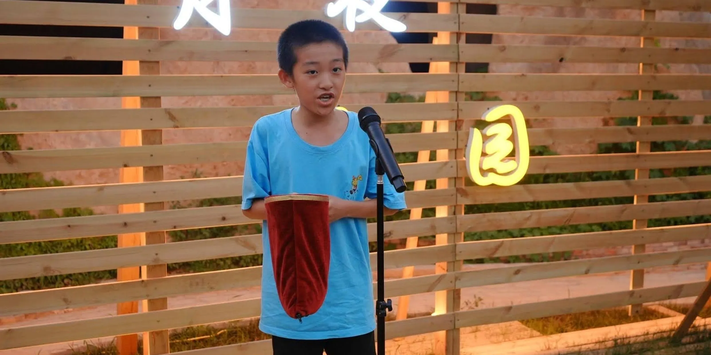

Henry Chen
Founder & Magician
Henry founded Gasp Machine to share his love of magic with the community. From polka-dot handkerchiefs to card miracles, he believes the best trick is the smile that comes right after the gasp.
Gasp Machine is a magic club devoted to the craft of astonishment — close-up sleight of hand, stage illusions, and volunteer shows that bring a little wonder wherever we go. Here are the people behind the curtain.

Founder & Magician
Henry founded Gasp Machine to share his love of magic with the community. From polka-dot handkerchiefs to card miracles, he believes the best trick is the smile that comes right after the gasp.